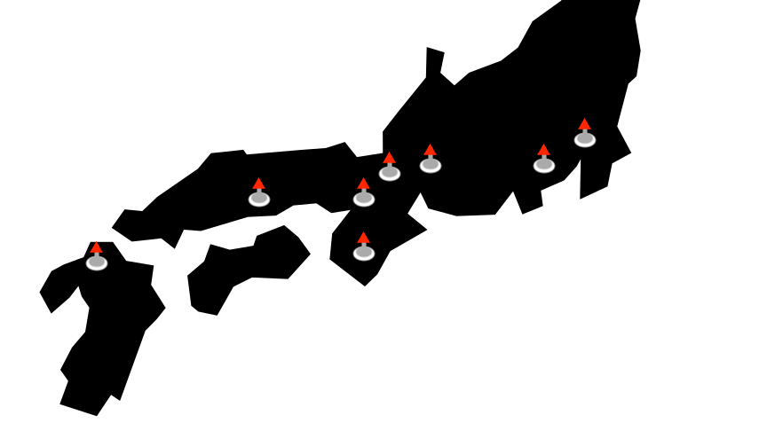

ABOUT
So... My trip to Japan.
The aim of this thing was to be like a 'web diary' of my trip.
There's something about posting on socials like Instagram & Facebook that makes me feel like I'm putting too much of myself out there and makes me insecure. I do however think that there are parts of my life that are beautiful and worth sharing with others.
I hope my trip to Japan is one of those experiences worth sharing and I'm doing so through this medium.
I'll probably get lazy trying to create it and skip some steps like accessability etc., somethings might break & it may not look the prettiest at times, but I'll be happy enough with it to call it mine (hopefully).
Enjoy :)
TRIP LOCATIONS
